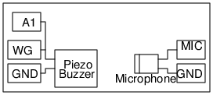

Schematic

Instructions
- Make the connections. Keep the mic facing the buzzer, 4 to5 cm apart.
- Toggle Enable Measurement
- Adjust the distance between the Buzzer and the microphone to make the two traces in phase.
- Note down that distance and change the distance to make the traces 180 degree out of phase.
- The change is distance required for that is half wavelength. v = f x 2 x d